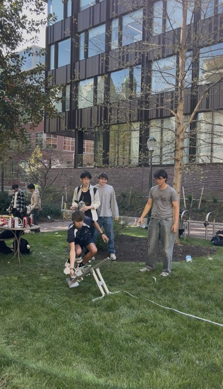

Model inputs
The model accepted water mass, water temperature and launch angle. The physical rocket used a 2 L bottle, 15 g of butane, a 50 g nose mass and angled PLA fins that induced axial rotation for improved stability.
MEAM 2480 Team Project | Spring 2026
A physics-based Python model developed to predict the landing position of a butane-powered bottle rocket.
The project combined thermodynamics, fluid mechanics, rigid-body motion and experimental calibration. Given the water mass, water temperature and launch angle, the model simulated the thrust phase and subsequent trajectory to predict downrange distance.

01
Predicting range from three controllable launch parameters.
The model accepted water mass, water temperature and launch angle. The physical rocket used a 2 L bottle, 15 g of butane, a 50 g nose mass and angled PLA fins that induced axial rotation for improved stability.
02
A coupled set of ordinary differential equations represented the launch physics.
Bernoulli’s steady-flow equation related bottle pressure to water mass flow through the nozzle.
Volume conservation increased the gas volume as water was expelled from the fixed-volume bottle.
First-law and mass-balance relations modelled evaporation and the changing gas mass.
Numerical integration advanced the rocket until it returned to ground level, including gravity and drag.
03
Experimental data converted an idealized model into a more useful predictor.
Launch data covered water temperatures of 15.9–37°C, water masses of 350–750 g and angles of 31–80°. The discharge coefficient, latent heat and butane heat-capacity parameters were fitted by minimizing mean-squared error between predicted and measured distance.
The model assumed constant temperature during the pressure calculation, fixed nozzle area, constant drag coefficient, two-dimensional motion and no internal fluid movement. Launch-to-launch variation in butane loading and release method introduced additional uncertainty.
04
Demonstration launches tested how well the calibrated model generalized.
The rocket travelled 14.25 m, producing 38.6% error. A nontrivial portion of the butane was spilled during loading, reducing the available energy and explaining much of the shortfall.
With more consistent butane loading, the rocket travelled 25.4 m—2.2 m beyond the prediction and within 9.5%. Remaining error was linked to modelling assumptions and a 20 g mass difference between the calibration and demonstration rockets.
05
The model was developed alongside repeated launch experiments.

06
The final model linked first-principles equations with experimental fitting and produced a range prediction within 9.5% on the more consistent demonstration launch. The project developed my experience building coupled dynamic models, selecting assumptions, calibrating unknown parameters and diagnosing discrepancies between simulations and real systems.